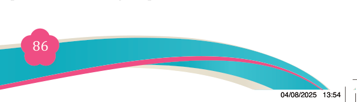
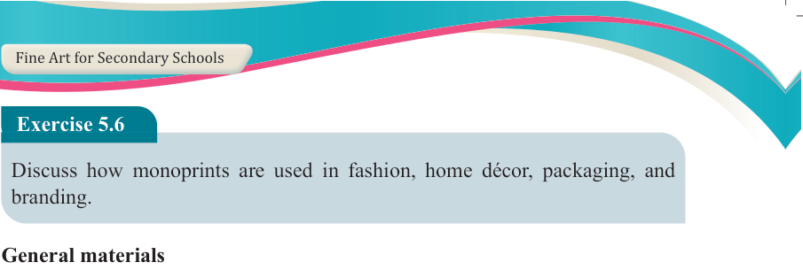

Fine Art for Secondary Schools

86

Student’s Book Form Two


Exercise 5.6
Discuss how monoprints are used in fashion, home décor, packaging, and

branding.
General materials
(a) Fabrics: They are used for printing functional textiles such as clothing, bags and home decorative items. These include natural fabrics like cotton, linen, silk, and wool; synthetic fabrics such as polyester and nylon, and blended fabrics like cotton-polyester, wool-polyester, or silk-cotton blends.
(b) Permanent printing inks or fabric paints: These are specially formulated to be durable and washable, making them suitable for practical applications such
as clothing and home textiles. They must withstand repeated washing without
fading or cracking. Examples include screen printing inks like plastisol and water-based inks as well as fabric paints such as acrylic fabric paint and dye- based paints used for batik and tie-dye techniques.
(c) Paperboard or cardstock: These materials are commonly used for packaging, labels and stationery that feature functional printed designs. Paperboard is
often used for product boxes, cereal packaging, book covers, while cardstock
is ideal for greeting cards, tags, business cards, and brochures. Both materials
support high-quality printing and provide durability for everyday handling.
(d) Fixatives or fabric binders: These are chemical agents used to ensure that inks or paints adhere permanently to fabrics and remain resistant to washing,
fading or cracking. They help improve colourfastness and durability of printed
textiles. For example, heat-set fabric binders are commonly used with screen printing inks, while chemical fixatives are often applied in dyeing processes like batik or tie-dye to lock in colour.
(e) Natural or found materials
Objects such as leaves, fabrics, string, wood, or other textured surfaces can be used to create unique and organic print designs. These materials are often
incorporated into techniques like block printing, eco-printing or monoprinting
to add texture, pattern and natural variation. For example, leaves can be inked
and pressed onto fabric or paper to transfer their intricate vein patterns, while
textured fabrics can be used to add depth to surface designs.
Procedure for creating simple functional monoprints
To create a simple functional monoprints, the followings steps have to be followed:
04/08/2025 13:54